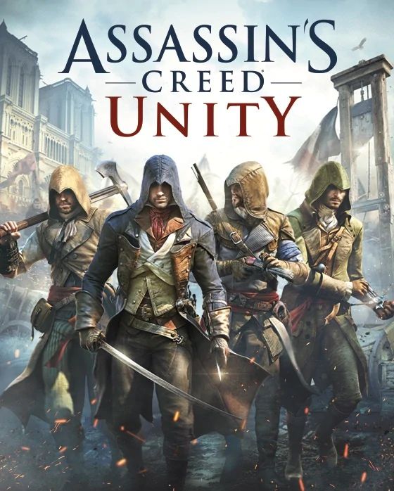
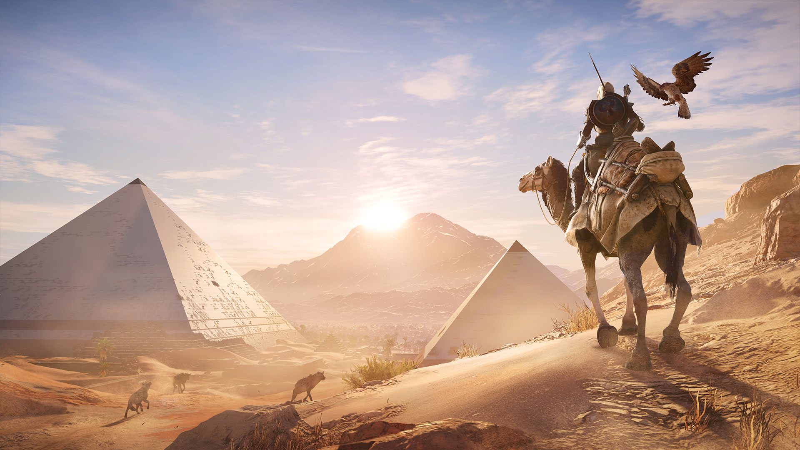

"History is your playground."
Developed and published by Ubisoft Entertainment SA, a French multinational headquartered in Montreuil, the game series Assassin's Creed is the pride of French gaming industry, boasting exhilarating adventure, wonderful scenery, vast open world, and unforgettable tours backwards in time.
The games fall under the genre of Action-adventure Stealth, dipicting the centuries-old struggle between the Assassins, who fight for peace and equality, and the Templars, who seek power and world domination. The series features historical fiction, science fiction and characters, intertwined with real-world historical events and figures. By September 2016, the series had sold out over 100 million copies across all platforms, ranking itself among the highest selling video game franchises of all time.
On this page I will introduce the main entries of the franchise, where the player is placed in an open world from third person perspective. Titles I have played myself will feature official introductions and my comments, while the ones I haven't will only have information from their websites, or perhaps some reviews and opinions that have been trending in the Community or on the Internet. First, let's have an overview of the settings and timeline of the games:
|
Website: Official Website
Platforms: Xbox 360, PlayStation 3, PC, Mac Release: November 13, 2007. Available Now Developer: Ubisoft Montreal |
The game that started it ALL.
You are an Assassin, stalking your prey with a hidden blade. A warrior shrouded in secrecy and feared for your ruthlessness. Your actions can throw your immediate environment into chaos, and your existence will shape events during this pivotal moment in history.
Master the skills, tactics and weapons of history’s deadliest and most secretive clan of warriors including the deadly Hidden Blade.
Stalk your prey through richly detailed, historically accurate, open-ended environments. Scale buildings, mount horses, blend in with crowds. Do whatever it takes to achieve your objectives.
Experience heavy action blended with fluid and precise animations. Use a wide range of medieval weapons, and face your enemies in realistic swordfight duels.
| Gallery 1.1 Sword Fight |
| Gallery 1.2 Assassination Imminent |
I know not much about this first instalment in the franchise. You play Altaïr, the first Master Assassin in medieval times, and roam the Holy City of Jerusalem.
Although this game is released more than a decade ago, its map, graphics and gameplay still remain something we can not hope to see from our domestic gaming industry in another decade. Or maybe two.
|
Website: Official Website
Platforms: Xbox 360, PlayStation 3, PC, Mac Release: November 1, 2009. Available Now Developer: Ubisoft Montreal |
Get ready to plunge into the lush and deadly world of the Italian Renaissance, an era of arts, riches and murderous conspiracy.
Assassin's Creed II introduces you to Ezio, a new assassin carrying on the deadly lineage of his forebears. Confront an epic tale of power and corruption as you hone your Assassin's art, wielding weapons and instruments designed by the legendary Leonardo Da Vinci himself in this gripping and deadly sequel.
Explore the deadly, shadowed world of the assassin with new assassin Ezio Auditore Da Firenze.
Roam freely through the lush and dangerous world of Renaissance-era Italy.
Do whatever it takes to complete your missions in the game's all-new open world and mission structure.
Thrive in an environment rich with power, revenge and conspiracy.
Practice your assassin's art with all-new weapons and instruments created by Leonardo da Vinci.
Master the skills, tactics and weapons of history’s deadliest and most secretive clan of warriors including the deadly Hidden Blade.
Stalk your prey through richly detailed, historically accurate, open-ended environments. Scale buildings, mount horses, blend in with crowds. Do whatever it takes to achieve your objectives.
Experience heavy action blended with fluid and precise animations. Use a wide range of medieval weapons, and face your enemies in realistic swordfight duels.
| Gallery 2.1 Venice Thieves |
| Gallery 2.2 Sweep the Leg |
| Gallery 2.3 Venice Canal |
Assassin's Creed II, with the following Brotherhood and Revelations, are known as the Ezio Trilogy, featuring the legendary Renaissance Master Assassin Ezio Auditore, arguably the most memorable of all Masters.
Capturing the whole life of this Venice aristocrat, his youth, love, loss, atonement and legacy, for many, this trilogy ranks among the very best of all titles.
|
Website: Official Website
Platforms: Xbox 360, PlayStation 3, PC, Mac Release: November 16, 2010. Available Now Developer: Ubisoft Montreal |
Live and breathe as Ezio, a legendary Master Assassin, in his enduring struggle against the powerful Templar order.
He must journey into Italy’s greatest city, Rome, center of power, greed and corruption to strike at the heart of the enemy. Defeating the corrupt tyrants entrenched there will require not only strength, but leadership, as Ezio commands an entire brotherhood of Assassins who will rally to his side. Only by working together can the Assassins defeat their mortal enemies and prevent the extinction of their order.
| Gallery 3.1 The Coliseum |
| Gallery 3.2 Street of Rome |
| Gallery 3.3 Ezio and Leonardo Da Vinci |
There's always something you cannot forget. To me, it's the silhouette of Ezio on top of the highest spire of St. Paul's Basilica in the 16th century Rome.
This is my entry point into the franchise, and a brilliant choice at that. To me, one who never knew what open world was, Ubisoft's restoration of the Eternal City upon Seven Hills and its environs and people, was simply astounding. That winter, 2015, I was completely taken by the beauty and possibility of the city. I was atop the Pantheon and the Coliseum. I scaled the decorated walls of the Vatican City. I wandered along the winding course of river Tiber. I read the marks on those Quick Travel wells, SENATVS·POPVLVSQVE·ROMANVS, my first introduction into the language of Latin.
And of course, Ezio's Brotherhood, home for initiates of the Assassins, testimony of his excellent leadership and foresight. Three hundred years later, in the Victorian era, where Syndicate is set, his name is still held sacred on the lips of our heroes. They even re-designed Ezio's clothes for Jacob Frye.
"We work in the Dark, to serve the Light. Nothing is true; everything is permitted."
|
Website: Official Website
Platforms: Xbox 360, PlayStation 3, PC Release: November 15, 2011. Available Now Developer: Ubisoft Montreal |
When a man has won all of his battles and defeated all of his enemies; what is left for him to achieve?
Ezio Auditore must leave his life behind in search of answers, in search of the truth. In Assassin's Creed Revelations, master assassin Ezio Auditore walks in the footsteps of the legendary mentor Altaïr, on a journey of discovery and revelation. It is a perilous path — one that will take Ezio to Constantinople, the heart of the Ottoman Empire, where a growing army of Templars threatens to destabilize the region.
Fight as both Ezio and Altair to discover the truth behind the Creed. Walk in the footsteps of these master Assassins to uncover the secrets behind their Order and the destiny that unites them.
Navigate your environment faster and more fluidly than ever with the new hookblade. This vicious new weapon allows you to perform aerial assassinations more easily, and to chain together your attacks across multiple foes, flowing effortlessly from kill to kill.
Experience new levels of gameplay customization with advanced bomb crafting. Using components found throughout the vast world of Assassin’s Creed Revelations, you’ll be able to create hundreds of different bombs to serve a multitude of functions, perfectly tailoring each to suit your gameplay style.
| Gallery 4.1 The Approach |
|
| Gallery 4.2 Ezio |
| Gallery 4.3 Lay of the Land |
The thrid and final one of the Ezio Trilogy. Not much else to say.
Although before reading the offical introduction, I never expected that he goes to Constantinople.
|
Website: Official Website
Platforms: Xbox 360, PlayStation 3, PC, Wii U Release: October 30, 2012. Available Now Developer: Ubisoft Montreal |
Marching into a new era.
The year is 1775. The American colonies are about to revolt. You are Connor, an assassin who has sworn to secure liberty for his people and his nation. To do so, you will hunt your enemies across a staggeringly large, open, and realistic world. You will unleash your lethal skills in a violent quest that will take you from chaotic city streets to blood-soaked battlefields in the hostile American wilderness and beyond. You will meet legendary heroes of American history, and together you will conspire to annihilate those who threaten Liberty itself.
Whether you use your predatory instincts to kill silently, or your fearsome arsenal to kill openly, one thing is clear: the world that the Assassins live in has become far more deadly. And so have you.
You are Connor, the warrior son of a Native American mother and British father. As a bloody revolution draws ever nearer, your clan is threatened by a powerful group seeking to crush the American revolution and control the thirteen colonies.Shocked into action by the devastation of your village, you pledge your life to the cause of freedom, and embark on a decades-long quest to achieve it.
There’s the American Revolution you know from history books. And then there’s the revolution you’ll be fighting, set in a world that’s far more realistic, gritty, and alive than any history book ever could be.
Connor will battle his enemies not only on land, but also on the high seas aboard his stalwart vessel, The Aquila.You’ll navigate tumultuous waters and command your own naval warship, sending enemies to their watery graves with cannons and an array of powerful naval weaponry. Or should you choose, ready a boarding party and take the fight to the enemy by battling hand-to-hand on the deck of their own ship.
Experience the jaw-dropping power of Anvil Next, the all-new engine designed exclusively for Assassin’s Creed III.The team spent three years building this revolutionary system from the ground up, and the results are nothing short of breathtaking.It begins with stunning breakthroughs in motion-capture, animation, and AI technology, which deliver more realistic character animations and interactions than ever before. It continues with dynamic weather, seasons, and time, which significantly affect the world around you. And no all-new engine would be complete without a dramatically-expanded combat and stealth system.
| Gallery 5.1 Log Jump |
| Gallery 5.2 Red Coats |
| Gallery 5.3 Ambush |
| Gallery 5.4 1 vs. 3 |
| Gallery 5.5 Lookout Below |
|
Website: Official Website
Platforms: Xbox 360, Xbox One, PlayStation 3, PlayStation 4, PC, Wii U Release: October 29, 2013. Available Now Developer: Ubisoft Montreal |
Into this world sails a young, cocky, and fearsome captain named Edward Kenway.
Assassin's Creed IV Black Flag begins in 1715, when pirates established a lawless republic in the Caribbean and ruled the land and seas. These outlaws paralyzed navies, halted international trade, and plundered vast fortunes. They threatened the power structures that ruled Europe, inspired the imaginations of millions, and left a legacy that still endures.
Stand among legendary pirates such as Blackbeard, Calico Jack and Benjamin Hornigold, as you establish a lawless republic in the Bahamas and relive the truly explosive events that defined the Golden Age of Pirates. From Kingston to Nassau, explore 50 unique locations where you can live the life of a pirate. Captain and customize your own ship, search for lost treasure, hunt rare animals and loot underwater shipwrecks.
Get to know Captain Edward Kenway and his host of fearsome pirate allies, like Charles Vane, Anne Bonny, Calico Jack and Blackbeard. Take on pirate hunter Woodes Rogers whose ruthlessness is surpassed only by his infamy as the bane of outlaw sailors.
| Gallery 6.1 Vista |
| Gallery 6.2 Jungle Showdown |
| Gallery 6.3 Blackbeard and Edward |
What's left in my memory of this game is its naval warfare. Battles on the Aegean Sea in Odyssey recently reminds me of the pleasure of firing cannonballs instead of merely arrows towards the enemey, and the security that ships with more than one sail can bring.
I'm seriously considering buying it again.
|
Website: Official Website
Platforms: Xbox 360, Xbox One, PlayStation 3, PlayStation 4, PC Release: November 11, 2014. Available Now Developer: Ubisoft Montreal |
The darkest chapter in the franchise yet.
As Shay, you will experience the slow transformation from Assassin to Assassin hunter. Follow your own creed and set off on an extraordinary journey through New York City, the wild river valley, and far away to the icy cold waters of the North Atlantic in pursuit of your ultimate goal, to bring down the Assassins.
18th century, North America. Amidst the chaos and violence of the French and Indian War, Shay Patrick Cormac, a fearless young member of the Brotherhood of Assassins, undergoes a dark transformation that will forever shape the future of the American colonies. After a dangerous mission gone tragically wrong, Shay turns his back on the Assassins who, in response, attempt to end his life. Cast aside by those he once called brothers, Shay sets out on a mission to wipe out all who turned against him and ultimately become the most feared Assassin hunter in history.
Experience the Assassin’s Creed universe from the perspective of a Templar. Play as Shay, who, in addition to the deadly skills of a Master Assassin, also possesses never-before-seen skills and weapons.
Witness Shay’s transformation from an adventurous Assassin to a grim and committed Templar willing to hunt down his former brothers. Experience firsthand the events that will lead Shay down a dark path and set him on a course that will forever change the fate of the Brotherhood.
Cast off in your ship, the Morrigan, and fight your way through the icy seas of the North Atlantic and the narrow waters of America’s river valleys. Assassin’s Creed Rogue builds on the award-winning naval experience from Assassin’s Creed IV Black Flag with all-new gameplay.
 |
| Gallery 7.1 Fire! |
| Gallery 7.2 Land Ho |
| Gallery 7.3 Roof Tops |
| Gallery 7.4 Arch and Dawn |
Ah, I remember this one well. The young Assassin who turned against the Brotherhood. You may know the 1755 Lisbon Earthquake. Yeah, you are ordered by your Mentor to take an ancient Artifact beneath a cathedral in downtown Lisbon, resulting in the earthquake, killing 90,000 innocent people through your obedience. I still remember jumping across the rubble and the roofs, among horrible fire and countless dead bodies, to escape to safety.
This catastrophe leaves many great thinkers to reflect upon the existence of a benevolent God, including Goethe, with his famous remark, "by destroying the faithful and the sinned together, God does not prove a benevolent Father."
It also leads Shay to question the path of the Assassins. The Templars seek order, and we're against them mainly by beating them to these Artifacts. In the end we have it, and destroy the established order and everyday life of thousands ordinary people. Is this right?
Shay later begins to hunt down his brothers and Mentors. He becomes the Grand Master of the Templar Order, and is still blamed and abhorred two hundred years later in the Syndicate for the fall of the Brotherhood. A truly dark chapter.
|  |
Website: Official Website
Platforms: Xbox One, PlayStation 4, PC Release: November 13, 2014. Available Now Developer: Ubisoft Montreal |
A brutal world.
Paris, 1789 – The French Revolution turns a once-magnificent city into a place of terror and chaos. Its cobblestone streets run red with the blood of commoners who dared to rise up against the oppressive aristocracy.
As the nation tears itself apart, a young man named Arno will embark on an extraordinary journey to expose the true powers behind the Revolution. His pursuit will throw him into the middle of a ruthless struggle for the fate of a nation, and transform him into a true Master Assassin.
Introducing Assassin’s Creed® Unity, the next-gen evolution of the blockbuster franchise powered by the enhanced Anvil engine. From the storming of the Bastille to the execution of King Louis XVI, experience the French Revolution as never before – and help the people of France carve an entirely new destiny.
Full Motion Control with New Parkour Mechanics for Free Running Up, Across and Down City Walls and Buildings.A reinvented fighting system provides a richer combat experience based on skill, timing and flow. Enhanced stealth gameplay, including a new stealth mode, cover system, and crowd-manipulation techniques.
| Gallery 8.1 Hold the Line |
| Gallery 8.2 Gathering of Townsfolk |
| Gallery 8.3 Face to Face with History |
| Gallery 8.4 Bombs Away |
| Gallery 8.5 Rooftops |
It did what the box said: a true next-gen experience. So true that people were not ready to embrace it, that Ubisoft speedily toned it down.
Unity employs the new Anvil engine, a great leap forwards in graphics and a big stride backwards in performance. Upon release, it boasted stunning and incredibly realistic, detailed display, but the mainstream platforms were having difficulties with the high CPU and GPU demand, and the vast majority of players reported awful game experience with loads of bugs as well as antihuman UI. Also, they were upset over the hard lot that befell Arno, who lost his father in the beginning, his Mentor in the middle, and his love in the end.
Unity became Ubisoft's Waterloo, so much so that its Season Pass was cancelled, and the game could be purchased at an unprecedently low price.
|
Website: Official Website
Platforms: Xbox One, PlayStation 4, PC Release: November 25, 2015. Available Now Developer: Ubisoft Quebec in collaboration with Ubisoft’s Annecy, Bucharest, Kiev, Montpellier, Montreal, Shanghai, Singapore, Sofia, and Toronto studios. |
At the birth of modern age.
London, 1868. The Industrial Revolution unleashes an incredible age of invention, transforming the lives of millions with technologies once thought impossible. Opportunities created during this period have people rushing to London to engage in this new world, a world no longer controlled by kings, emperors, politicians, or religion, but by a new common denominator: money.
Not everyone is able to enjoy the benefits of this boom, however. Despite fueling the engine of the British Empire, workers’ lives are little more than legalized slavery while the top few percent profit from their labor. Living poor and dying young, the lower class unite in protest as a new kind of family, gangs, who turn to a life in the underworld in their struggle to survive. A struggle, until watchful Assassins come to their side and re-ignite an age-old conflict involving London’s leaders that will echo throughout modern history, from the underground up.
Introducing Jacob Frye, who with the help of his twin sister Evie, will change the fate of millions in Assassin’s Creed Syndicate. Rise to rally and lead the underworld to break the corrupt stranglehold on London in a visceral adventure filled with action, intrigue, and brutal combat.
| Gallery 9.1 The Palace of Westminster, from the Top of the Big Ben |
| Gallery 9.2 Leap of Faith, with the Face of the Clock |
| Gallery 9.3 The Facade and Spires of Westminster Abbey |
My favourite in the series. You may notice, that the images above are different from those of previous titles. That's because I took the actual in-game screenshots myself. There are only three of them because I've got only limited time to make this webpage, otherwise, you'll see at least twenty of 'em.
Syndicate is the fruit of Ubisoft's efforts to balance the books. It reverted to the old engine, cut all those demanding features, and redesigned in-game UI. It was developed by Ubisoft Quebec, who provided us with an at least, satisfactory game. Well, "satisfactory" is for others. To me it's perfect.
I love the Victorian era, and London was then the heart of the world, City of Light, with famous writers, brilliant thinkers and legendary scientists. Dickens, Conan Doyle, Darwin, Bell, even Marx himself appeared in the game. Today's London is, of course, much much bigger than its depicted core, still, developers at Quebec did a hell of a great job.
 |
Website: Official Website
Platforms: Xbox One, PlayStation 4, PC Release: October, 2017. Available Now Developer: Ubisoft Montreal. |
To the beginning.
Set in mysterious Ancient Egypt, Assassin’s Creed Origins is a new beginning. Experience a new way to fight while exploring the Great Pyramids and hidden tombs across the country of Ancient Egypt, and encounter many memorable storylines along your journey. And discover the origin story of the Assassin's Brotherhood.
From deserts to lush oases, from the Mediterranean Sea to the tombs of Giza, fight your way against dangerous ancient factions and wild beasts as you explore this gigantic and unpredictable land.
Experience a completely new way to fight as you loot and use hundreds of weapons with different characteristics and rarities.
Dive into a new adventure every time you play, with each quest telling an intense, emotional, and memorable story.
Egypt is faltering under the rule of inexperienced monarchs. It’s a time for the silver-tongued to attempt to take control, and for the Assassin’s Brotherhood to emerge and ensure that doesn’t happen.
 |
| Gallery 10.1 Atop |
|  |
| Gallery 10.2 Dawn in Desert |
| Gallery 10.3 In Front of Sphinx |
| Gallery 10.4 Shiny Room |
| Gallery 10.5 You Need to Be Harder than That |
 |
Website: Official Website
Platforms: Xbox One, PlayStation 4, PC Release: October 5, 2018. Available Now Developer: Ubisoft Paris. |
Live the epic odyssey of a legendary Spartan Hero.
Write your own epic odyssey and become a legendary Spartan hero in Assassin's Creed Odyssey, an inspiring adventure where you must forge your destiny and define your own path in a world on the brink of tearing itself apart. Influence how history unfolds as you experience a rich and ever-changing world shaped by your decisions.
Embark on your journey from humble beginnings as an outcast mercenary to a legendary Spartan hero, and uncover the truth about your mysterious past, as Alexios or Kassandra.
This ancient world features idyllic shores, volcanic mountain ranges, crystal-clear lakes, and arid deserts – an entire world full of breathtaking views and unexpected adventures. Explore an entire country full of untamed environments and cities at the peak of Greece's Golden Age.
There are almost infinite ways to explore Greece. Choose between main missions, story-based side quests, and more, as you seek to unearth the mysteries and secrets of this hallowed ground. Your decisions shape the world around you with over 30 hours of choice dialogue and multiple game endings. Experience an entire ancient world that constantly evolves and reacts to your every decision.
 |
| Gallery 11.1 Mounted |
| Gallery 11.2 Lightning Zeus |
Odyssey, the latest title and the one I'm currently playing. It features a specific Photo Mode, allowing you to take screenshots at almost any moment you please, except during cutscenes. I lost the previous folder where all my shots were kept, and all in the new folder are up there.
Also, it is worth noting that from Origins, the series introduced more RPG elements into the games, doubtly taken from The Wicther 3. This include a vast array of Player Levels, Equipment, and a feature called Auto Level-up, enabling the enemies to automatically level-up as you do, so to keep the game continually interesting and challenging.
Well at least in Origins they design a button to toggle that. In Odyssey, however, due to their wonderful decision to toggle off that toggle, you'll have to face the reality that when you are at Level 99, the cap, the game experience is almost nothing unlike what it is when you first launch it.
(Then why am I still playing it??)